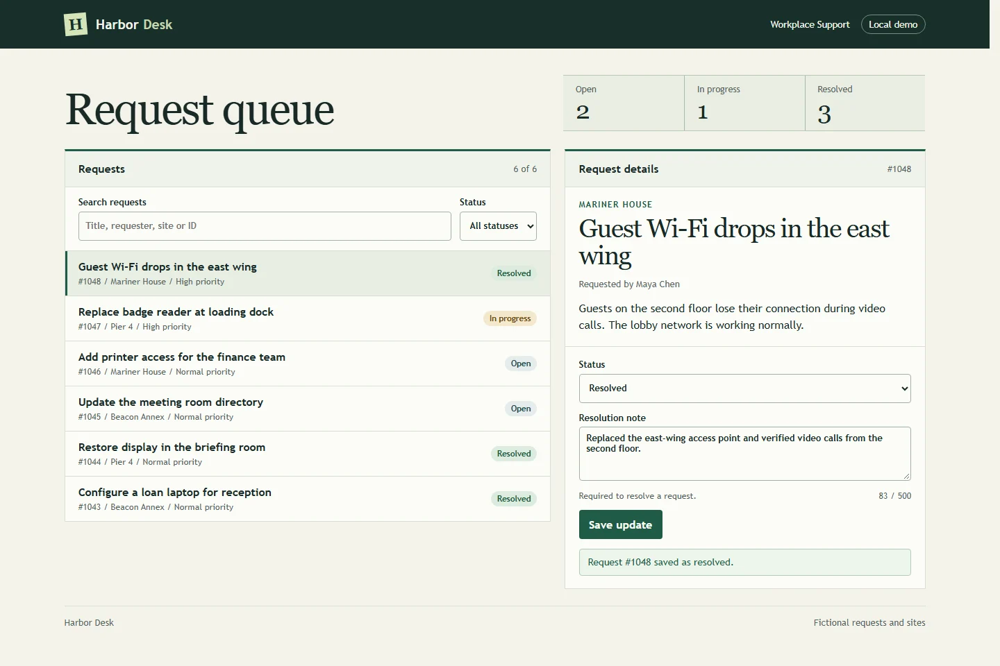
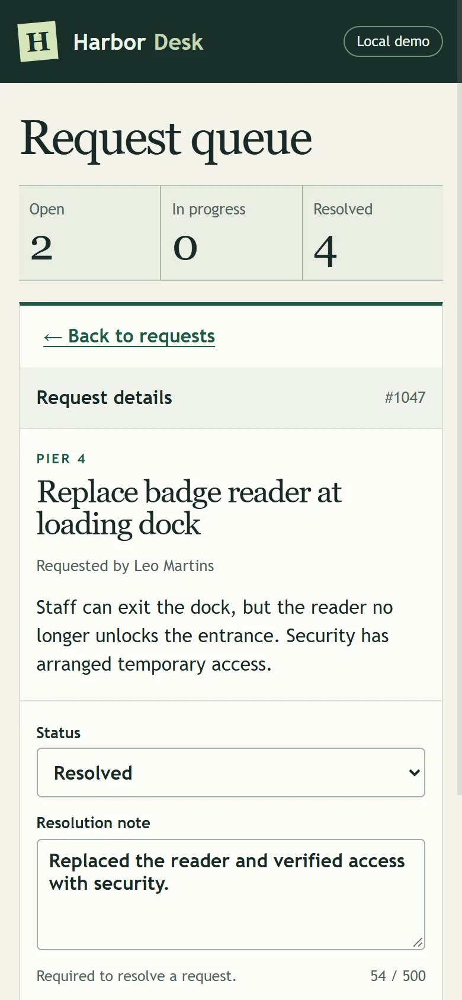

Engineering project · Runtime screenshot
Harbor Desk
Resolve workplace support requests with validation, durable notes and stale-edit recovery.
Local portfolio demo
Public source access pending.
Run the local demo
From the prepared project checkout, run these commands and open the address printed by the server. The repository may require access.
cd test-web-app
npm start
# Open http://127.0.0.1:4173

Problem
A workplace support operator needs to update requests while avoiding silent overwrites from another browser window.
Architecture
A dependency-free Node HTTP server serves the queue UI and JSON API. SQLite persists validated, version-checked updates. The browser filters the small queue locally.
Engineering decisions
- Require a resolution note when a ticket is marked resolved.
- Use version-checked writes and preserve the attempted note when an edit conflicts.
Implemented workflow
- Find the east-wing Wi-Fi request and choose Resolved.
- Add the required resolution note and save.
- Reload to verify persistence and inspect conflict or retry feedback.
Checks and evidence
Prepared application screenshots and the source README document this workflow. Application checks were not rerun during this portfolio update.
- Reviewed the source README and prepared screenshots in project-2026 on 25 November 2026.
Scope and next steps
- This is a single-user loopback demo with no account system.
- Anyone with access to the local server can edit the seeded requests.
- Synchronous storage and browser filtering target a small fixed queue.
Technology
Node.js · SQLite · JavaScript · HTML/CSS
Preview availability
Screenshots show the prepared local version. Hosted demos remain pending, and source access may require permission. Local setup requirements and remaining limits are documented above.
← Return to portfolio